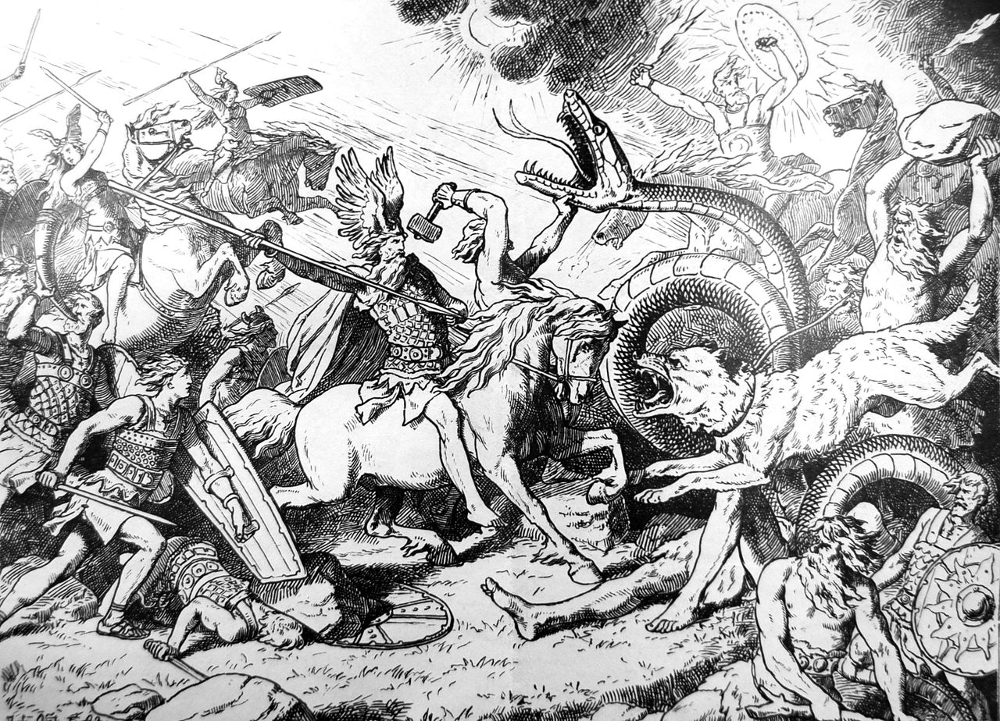

My name is Anthony, some people call me Tony but my dad is the one who mainly goes by Tony. I was born and raised in Ansonia, CT where I have lived since. I was born in March of 2003, practically making me a fan of St.Patrick's Day by birthright. I have a younger sister named Brooke who is two years younger than me and takes the title of my #1 best friend. I was always an adventorus child, wandering off on my own, exploring areas I shouldn't be in, etc. I practically invented hardcore hide n seek, although my parents were not fans of it. The reason I say this is that one of my big interests and overall goals in life is to travel, see different parts of the world(I'm sure that sounds cliche but..) such as Norway, Iceland, and Scandanavia. Im sure you saw the theme there but I also have an interest in vikings and Norse Mythology and would like to learn more about their culture both in general and firsthand.
Many of my primary interests involve video games and technology in general. Even at home my dad has given me the title of tech support, allthough I'm sure that goes for a lot of the students here. My first "game console" was a Nintendo 3DS. This was later followed by an Xbox360, a Playstation 4, a Nintendo Switch, and most recently is my PC. Ever since I was introduced to video games I have always known I wanted to do more, in a couple aspects. I have a few titles I want to achieve someday but even one is a challenge that is difficult for most people to accomplish, those being a pro CoD player, a popular content creator, and a game developer/designer. So I know that I may not achieve all of these goals, and I'm okay with that, but the fact that I have them lets me know my heart is in the right place. Among my other hobbies is dabbling a bit into 3d printing as well as an interest to get into cosplay, which could go hand in hand. I took four years of Mechanical Engineering in high school where I learned not only how to use modeling programs, but to read and make part/assembly drawings and blueprints as well as button pins, 3d prints, and how to use a CNC machine.
(Drawn depiction of Ragnarok)
